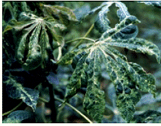

| Home |
TAPIOCA |
MAJOR PESTS |
| 1. Cassava scale |
| 2. Whitefly |
| 3. Spiraling whiteflies |
| 4. Mealy bug |
MINOR PESTS |
| 1. Thrips |
| 2. Red spider mites |
| Questions |
| Download Notes |
TUBER VEGETABLES :: MAJOR PESTS::WHITEFLY
2. Whitefly: Bemisia tabaci (Aleyrodidae: Hemiptera)
It transmits cassava mosaic disease in tapioca
Refer cotton for more information
Cassava mosaic symptom
|  |